2.打地鼠的实现
打地鼠的实现思路也非常的简单，在地鼠进洞前判断是否点击到了地鼠，点到了就加分，否则就损失一条生命，由于地鼠是动态进行的，所以用SurfaceView实现比较合适，地鼠的运动通过改变地鼠的y坐标就可以了，以前刚开始提取别人的素材发现地鼠图片是一帧一帧的，也受限于别人的思路。用系统控件ImageView也可以实现。
首先在游戏中有开始，暂停，继续，返回按钮，我们先进行完成一个按钮类，x，y代表按钮的位置，w，h代表按钮的宽，高，然后定义一个draw方法绘制按钮，如果需要按下效果，点击状态下绘制一张图片，抬起状态下绘制另一张图片。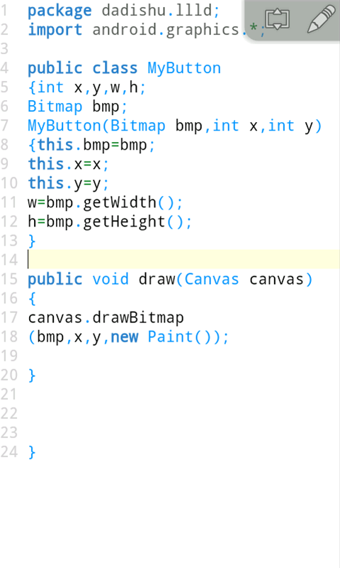
然后再定义一个isClick方法，判断动作是0为点击，贴吧教程里面有，然后获取点击的坐标是否在按钮范围，如果是就返回真，否则返回假，这样我们的按钮类就完成了。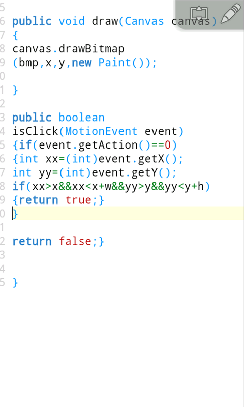
然后写上SurfaceView，不用介绍吧。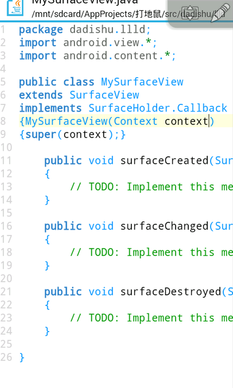
在Activity中全屏，显示自定义视图。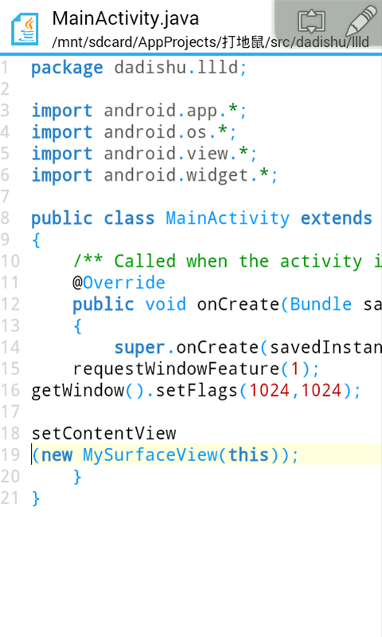
素材准备，准备一张背景图，起到刷屏作用，然后准备一张洞口图片。
这张作为地鼠洞口的图片，由于分辨率只有60*60，所以在res目录下新建一个drawable-ldpi目录，把图片放进里面，以保证在各分辨率的适应性，贴吧教程也有说过，低分辨率的文件夹。命名为empty。
背景图，可以放进mdpi目录里面去，命名为bg。
接下来定义一个背景类用于绘制背景，实例化刚刚那两张图片，w,h分别代表地鼠洞的宽高，然后定义一个draw方法绘制，首先绘制一张背景图进行刷屏，然后两层for循环将地鼠洞绘制16个。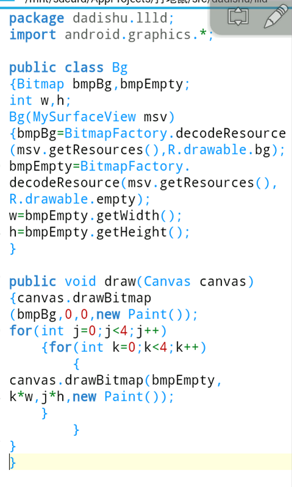
其实这里的for循环不需要两层，只需要一层for循环就可以了，i=0;i<16。不过这样比较直白一点。继续打开SurfaceView主视图，先把框架写上，定义一个init方法方便初始游戏，定义一个draw方法进行绘制，定义一个logic方法处理逻辑，然后实现Runnable接口，重写run方法，声明一个flag的布尔型用来控制线程，画布，控制器，在构造函数绑定视图监听器。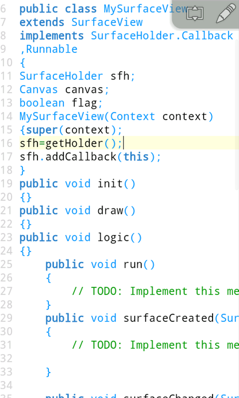
接下来划分游戏状态，有4种状态，菜单状态，游戏中，游戏暂停，游戏结束，state代表状态的标识。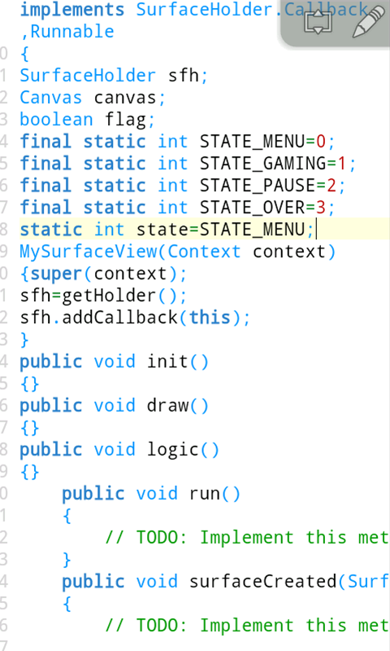
接下来在视图创建的时候如果为菜单状态就初始游戏，线程标识为真，启动线程，然后视图销毁的时候把线程标识改为假，如果游戏正在进行状态，就把状态调成暂停状态，手机按房子键也会执行视图销毁函数。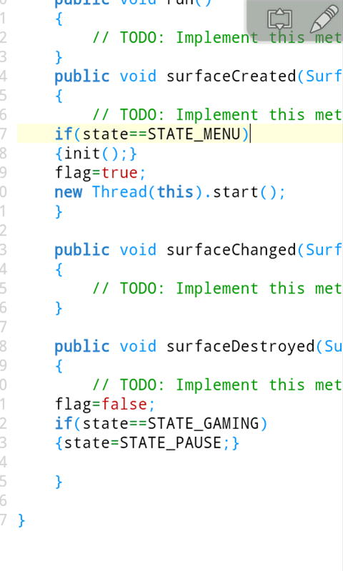
接下来在线程函数run中定义一个死循环，flag是线程循环标识，在里面不断的执行绘图函数与逻辑函数，先获取画布如果不为空就执行绘图函数，用try包裹防止出现异常，最后画布不为空提交画布，执行之前先取系统时间，执行完毕以后再取一次系统时间。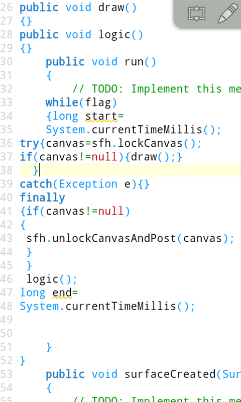
接下来计算绘图和逻辑所占用的时间，如果小于50毫秒就进行休眠，保持50毫秒一帧。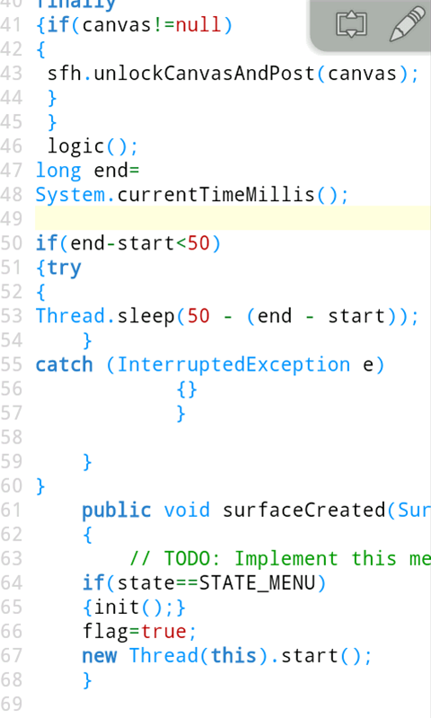
主视图的框架我们写好了，这个框架以后都可以进行重复使用，接下来我们写地鼠了。
地鼠图片，分辨率比较小，命名为t0放进ldpi目录，这里由于素材是一帧一帧的，其实一张地鼠图片也可以，改变y坐标来控制地鼠运动。
t1t2t3t4ｔ５t6，
被打中的图片。
再新建一个地鼠类，构造函数，绘图函数，逻辑函数，触屏函数，声明一个随机类，x，y代表地鼠的坐标。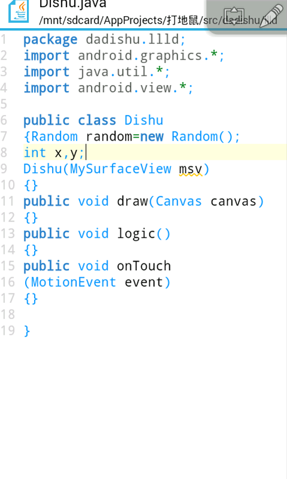
然后声明一个位图数组，代表地鼠每一帧，index代表地鼠下标，hp表示声明，score表示分数，isHint代表地鼠被打中状态，然后在构造函数中对位图实例化，构造函数还要增加一个Context的参数才可以，用来获取包名。getIdentifier方法贴吧教程也介绍过了。isIp作为地鼠是否向上的标识。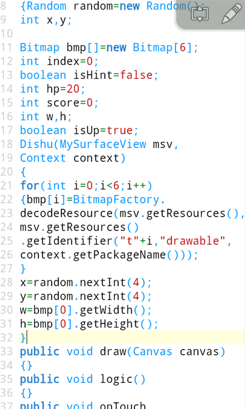
然后在地鼠绘图函数中绘制地鼠，x，y为地鼠坐标，w，h代表地鼠宽高，在地鼠的触屏函数中判断是否打中地鼠，如果打中地鼠就让打中标识为真，地鼠向上标识为假，地鼠的帧下标为被打中的图片。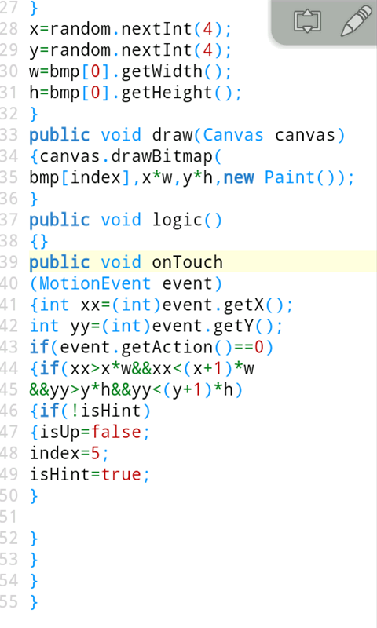
接下来写地鼠的逻辑函数，写完这个程序基本上就完成了，判断帧下标如果到最大值，就让向上标识为假，如果向上表示为真，帧下标就增加，如果为假，帧下标就减少，判断帧下标小于0，如果没有打中标识为真就增加分数，重写初始地鼠坐标，如果打中标识为假就减少一条生命，如果生命数为0了就调整游戏状态为over状态。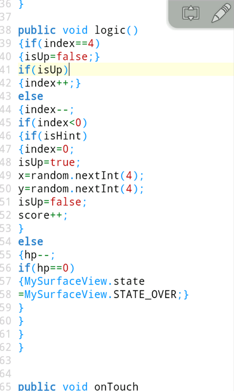
score++下面那里写错了，应该是isHint=false。这些类都完成了，放进主视图中就可以了。
另外lockCanvas()里面可以接受一个Rect类型的参数，这样只需要获取地鼠区域的画布就可以了，可以很大程度提高性能，上面的设计每次都是获取整个画布，每次都需要重绘背景和地鼠，性能消耗会有点高。
这篇课程还没完的，运行就是黑黑得屏幕，把类都设计完成了，下面不用多介绍了吧，在SurfaceView中进行使用就可以了，绘图函数执行绘图函数，逻辑函数里面逻辑函数，当然要分各种状态进行执行。
这里还是把源码发上来吧，这个是以前第一次写的版本，没有暂停，地鼠逻辑也没有封装:http://pan.baidu.com/share/link?shareid=2900374977&uk=2301816883，后来改进了方案，只用一张地鼠图片实现动画。
另外要想等级提升地鼠数量增多的话生成一个地鼠数组就可以了，好久以前就发过了，打你妹1.3版。